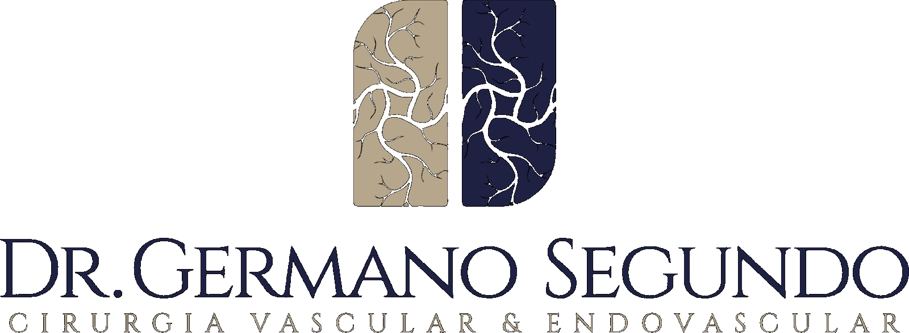
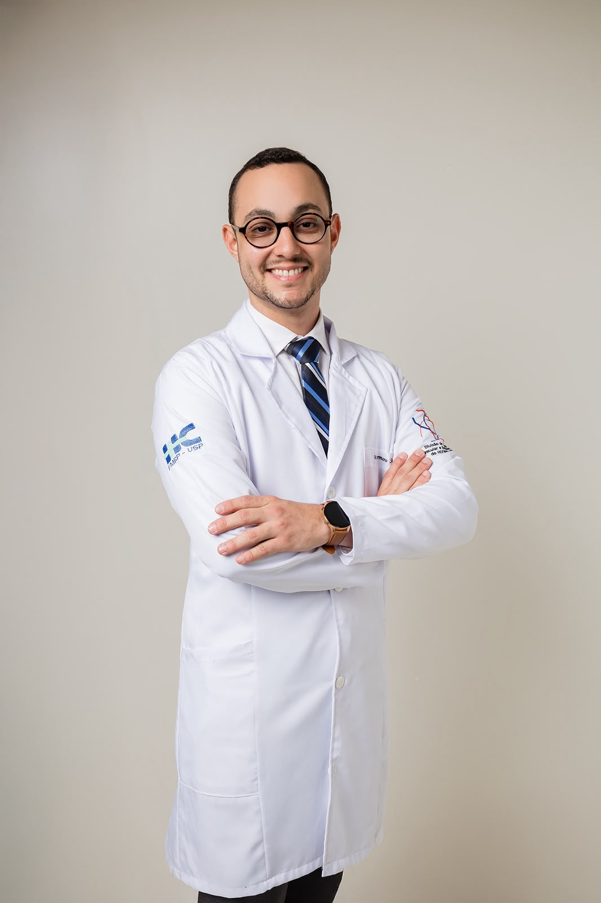

Agendar consultaCirurgia Vascular & Endovascular
Um cuidado atento a cada detalhe da sua saúde vascular — da escuta ao diagnóstico, do exame ao tratamento.

Cirurgião Vascular e Endovascular · CRM-PB 12101 · RQE 9516
A excelência no cuidado vascular é resultado de uma formação sólida, aliada ao constante aprimoramento científico
Graduado em Medicina pela Faculdade de Medicina Nova Esperança (FAMENE), possui residência em Cirurgia Geral pelo Hospital Santa Marcelina, em São Paulo, e residências em Cirurgia Vascular e Cirurgia Endovascular pelo Hospital das Clínicas da Faculdade de Medicina de Ribeirão Preto da Universidade de São Paulo (USP), referência nacional na especialidade.
É portador do Título de Especialista em Cirurgia Vascular, concedido pela Sociedade Brasileira de Angiologia e de Cirurgia Vascular (SBACV), e mestrando pela Faculdade de Medicina de Ribeirão Preto da USP, mantendo atuação pautada na atualização científica e na medicina baseada em evidências.
Sua prática clínica é fundamentada na precisão diagnóstica, na segurança e na utilização das técnicas mais modernas da cirurgia vascular, sempre com foco na excelência do atendimento e na qualidade do cuidado oferecido aos pacientes.
Diagnóstico e tratamento das principais condições vasculares, venosas e arteriais.
Alfa Medical • Av. Rio Grande do Sul, nº 1509, Bairro dos Estados
Atendimento com hora marcada